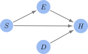

Structural Causal Models#
Definition#
Structural Causal Models (SCMs) are the models used in Pearl’s do-calculus framework. The key components of an SCM are:
Causal Graphs: Directed Acyclic Graphs (DAGs) representing causal relationships between variables.
Structural Equations: Functions describing how each variable is generated by its direct causes.
SCMs enable the application of Judea Pearl’s do-calculus for causal intervention analysis.
Definition 9
A Structural Causal Model is a tuple \((U, V, F, \mathrm{P}(U))\) where:
\(U\): A set of background (exogenous) variables that are not influenced by variables within the model.
\(V\): A set of observed (endogenous) variables that are determined by variables in the model.
\(F\): A set of functions, where each \(f \in F\) maps a subset of \(U \cup V\) to a unique \(v \in V\). Each function represents a causal mechanism.
\(\mathrm{P}(U)\): A probability distribution over the exogenous variables \(U\).
The causal structure of an SCM is represented as a causal graph, where nodes are variables (from \(U\) and \(V\)), and the edges are defined using \(F\).
Example#
Recall the example from the previous section.
Variables:
Endogenous: \(E\) (Exercise), \(D\) (Diet), \(H\) (Health), \(S\) (Stress).
Exogenous: \(U_E\), \(U_D\), \(U_H\), \(U_S\) (Unmeasured factors)
Structural Equations:
\[\begin{split} \begin{align*} E &= f_E(S, U_E), \, \, D = f_D(U_D) \\ S &= f_S(U_S), \, \, H = f_H(E,D,S,U_H). \end{align*} \end{split}\]
Recall the causal dependencies were represented by the following graph:

To summarise the above setup in words, we have:
Exercise and Stress are influenced by unmeasured factors \(U_E\) and \(U_S\) respectively.
Exercise is a function of Stress and the unmeasured factor \(U_S\).
Health is a function of both Exercise and Diet, along with other unmeasured factors \(U_H\).
Assumptions Underlying SCMs#
While causal graphs can simplify complex causal mechanisms into more manageable representations, this simplification assumes an idealised scenario where all relevant variables are measured, relationships between variables are accurately known, and the system under study adheres to the principles of causality. In reality, the limitations of observational data, the potential for unmeasured confounders, and the complexity of feedback loops and bidirectional influences often challenge these assumptions.
The effective use of causal graphs, therefore, requires not only an understanding of the theoretical assumptions that underpin these models but also an awareness of their limitations in practice. The key assumptions not already mentioned (for example a Causal Graph is a Bayesian Network) are faithfulness and the absence of hidden confounders.
The assumption that a causal graph is a compatible to a distribution \(P\) is also known as the Causal Markov Condition. This terminology will be used in the following sections.
Faithfulness#
The faithfulness assumption, also known as the stability assumption, is a critical concept in the context of Structural Causal Models (SCMs) and Bayesian networks. It complements the Causal Markov Condition by ensuring a precise correspondence between the conditional independencies present in the probability distribution of observed data and those implied by the causal graph.
Definition 10 (Faithful)
A probability distribution \(P\) over a set of variables \(V\) is said to be faithful to a DAG \(G\) if every conditional independence that holds in \(P\) is reflected by the \(d\)-separation properties of \(G\).
Formally, for any disjoint subsets of variables \(X,Y,Z \subseteq V\) if \(X\) and \(Y\) are conditionally independent given \(Z\), if and only if \(X\) and \(Y\) are \(d\)-separated by \(Z\) in \(G\).
The implication of this is the following:
At first, faithfulness and the causal Markov condition (graph compatibility) may seem to be equivalent. However, the following example demonstrates that faithfulness is a stronger condition.
Example 1 (Faithfulness vs. Compatibility)
Let \( \underline{X} = (X_1,\ldots, X_d)^\top \sim P\) with each \(X_i\) independent. Any DAG \(G\) over the variables \(\underline{X}\) is compatible, since
However, only the DAG with fully disconnected nodes is faithful.
In Causal inference, the assumption of faithfulness is crucial for the identifiability of the causal model from observational data. It ensures that the causal structure encoded in the DAG can be uniquely inferred from the conditional independencies observed in the data.
How we verify our graph is faithful and, if not, how do we adjust the graph so that it is, is discussed next.
Verifying Faithfulness#
There are various approaches to verify faithfulness.
Statistical Tests#
We can perform statistical tests to check for conditional independencies implied by the graph. While not exhaustive, finding significant deviations from these expected independencies may indicate a violation of faithfulness.
An example of a simple statistical test is partial correlation. This is based on the assumption of linear relationships between the variables, there are other tests that deal with non-linear relationships. For example, we could use mutual information or conditional mutual information based tests.
Let \(X\) and \(Y\) be variables in the DAG \(G\), and let \(Z\) be a subset of nodes not including \(X\) and \(Y\). The partial correlation is denoted \(\rho_{XY|Z}\). If there is only one variable in \(Z\), then the partial correlation can be written as
There is a more general formula when \(Z\) contains multiple variables. In any case, we can use the test statistic
Under the null-hypothesis, \(H_0: t = 0\), this statistic follows a Student-\(t\) distribution with \(n-k-2\) degrees of freedom. Where \(n\) is the sample size and \(k\) is the number of controlling variables in \(Z\).
Sensitivity Analysis#
We can perform sensitivity analyses to understand how changes in the graph affect the model’s predictions. Changes in the graph involve adding, removing or reversing edges. If small changes lead to significant changes in the the inferred causal effects, the original model may not be faithful.